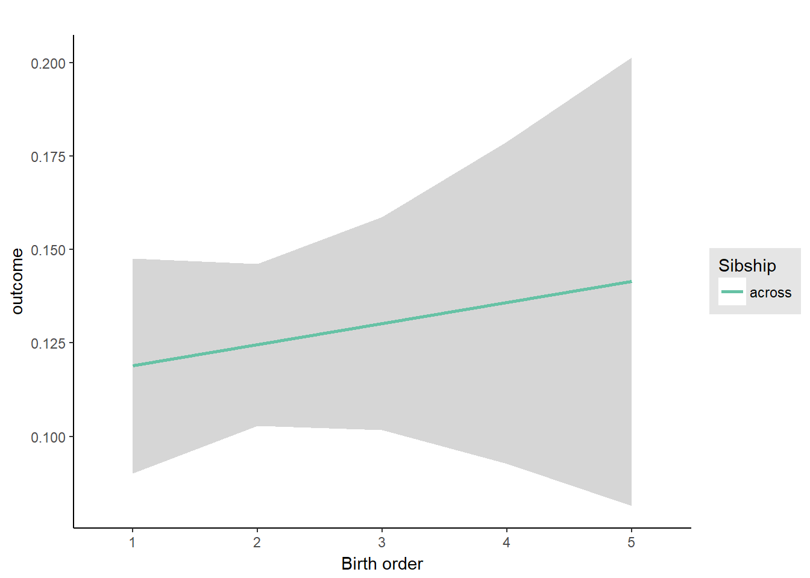
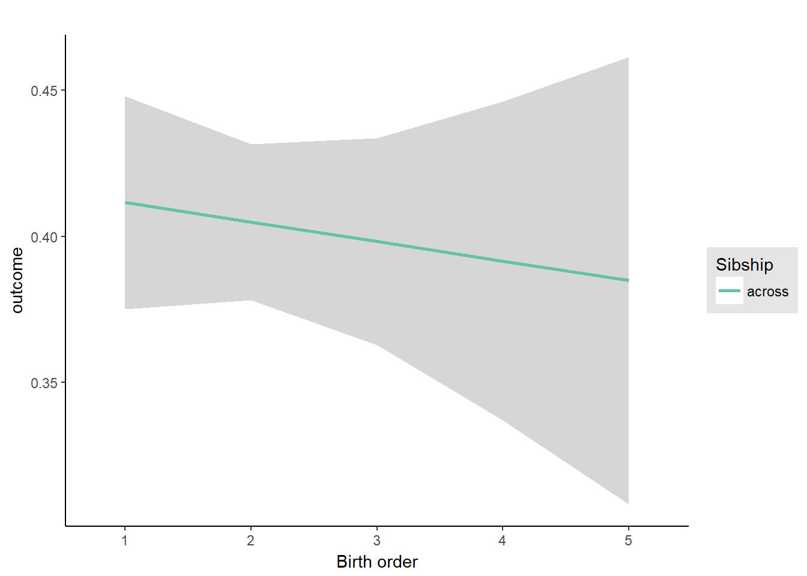

Birth Order Effects
Helper
source("0_helpers.R")## Warning: package 'rmarkdown' was built under R version 3.4.3## Warning: package 'knitr' was built under R version 3.4.3##
## Attaching package: 'formr'## The following object is masked from 'package:rmarkdown':
##
## word_document## Warning: package 'lubridate' was built under R version 3.4.3##
## Attaching package: 'lubridate'## The following object is masked from 'package:base':
##
## date## Warning: package 'stringr' was built under R version 3.4.3## Loading required package: carData## lattice theme set by effectsTheme()
## See ?effectsTheme for details.##
## Attaching package: 'data.table'## The following objects are masked from 'package:lubridate':
##
## hour, isoweek, mday, minute, month, quarter, second, wday, week, yday, year## The following objects are masked from 'package:formr':
##
## first, last## Loading required package: Matrix##
## Attaching package: 'lmerTest'## The following object is masked from 'package:lme4':
##
## lmer## The following object is masked from 'package:stats':
##
## step##
## Attaching package: 'cowplot'## The following object is masked from 'package:ggplot2':
##
## ggsave## Warning: package 'haven' was built under R version 3.4.3##
## Attaching package: 'psych'## The following objects are masked from 'package:ggplot2':
##
## %+%, alpha## This is lavaan 0.5-23.1097## lavaan is BETA software! Please report any bugs.##
## Attaching package: 'lavaan'## The following object is masked from 'package:psych':
##
## cor2cov## Loading required package: lattice## Loading required package: survival## Loading required package: Formula##
## Attaching package: 'Hmisc'## The following object is masked from 'package:psych':
##
## describe## The following objects are masked from 'package:base':
##
## format.pval, round.POSIXt, trunc.POSIXt, units## Warning: package 'tidyr' was built under R version 3.4.3##
## Attaching package: 'tidyr'## The following object is masked from 'package:Matrix':
##
## expand##
## Attaching package: 'dplyr'## The following objects are masked from 'package:Hmisc':
##
## combine, src, summarize## The following objects are masked from 'package:data.table':
##
## between, first, last## The following objects are masked from 'package:lubridate':
##
## intersect, setdiff, union## The following objects are masked from 'package:formr':
##
## first, last## The following objects are masked from 'package:stats':
##
## filter, lag## The following objects are masked from 'package:base':
##
## intersect, setdiff, setequal, union## Warning: package 'coefplot' was built under R version 3.4.3## Warning: package 'sjPlot' was built under R version 3.4.4##
## Attaching package: 'sjPlot'## The following objects are masked from 'package:cowplot':
##
## plot_grid, save_plotopts_chunk$set(warning = FALSE)Load data
birthorder = readRDS("data/alldata_birthorder.rds")Data preparations
# For analyses we want to clean the dataset and get rid of all uninteresting data
birthorder = birthorder %>%
filter(!is.na(pidlink)) %>% # no individuals who are only known from the pregnancy file
filter(is.na(lifebirths) | lifebirths == 2) %>% # remove 7 and 2 individuals who are known as stillbirth or miscarriage but still have PID
select(-lifebirths) %>%
filter(!is.na(mother_pidlink)) %>%
select(-father_pidlink) %>%
filter(is.na(any_multiple_birth) | any_multiple_birth != 1) %>% # remove families with twins/triplets/..
filter(!is.na(birthorder_naive)) %>%
select(-starts_with("age_"), -wave, -any_multiple_birth, -multiple_birth) %>%
mutate(money_spent_smoking_log = if_else(is.na(money_spent_smoking_log) & ever_smoked == 0, 0, money_spent_smoking_log),
amount = if_else(is.na(amount) & ever_smoked == 0, 0, amount),
amount_still_smokers = if_else(is.na(amount_still_smokers) & still_smoking == 0, 0, amount_still_smokers),
birthyear = lubridate::year(birthdate))
# recode Factor Variable as Dummy Variable
birthorder = left_join(birthorder,
birthorder %>%
filter(!is.na(Category)) %>%
mutate(var = 1) %>%
select(pidlink, Category, var) %>%
spread(Category, var, fill = 0, sep = "_"), by = "pidlink") %>%
select(-Category)
# recode Factor Variable as Dummy Variable
birthorder = left_join(birthorder,
birthorder %>%
filter(!is.na(Sector)) %>%
mutate(var = 1) %>%
select(pidlink, Sector, var) %>%
spread(Sector, var, fill = 0, sep = "_"), by = "pidlink") %>%
select(-Sector)
### Variables
birthorder = birthorder %>%
mutate(
# center variables that are used for analysis
g_factor_2015_old = scale(g_factor_2015_old),
g_factor_2015_young = scale(g_factor_2015_young),
g_factor_2007_old = scale(g_factor_2007_old),
g_factor_2007_young = scale(g_factor_2007_young),
raven_2015_old = scale(raven_2015_old),
math_2015_old = scale(math_2015_old),
count_backwards = scale(count_backwards),
raven_2015_young = scale(raven_2015_young),
math_2015_young = scale(math_2015_young),
words_remembered_avg = scale(words_remembered_avg),
words_immediate = scale(words_immediate),
words_delayed = scale(words_delayed),
adaptive_numbering = scale(adaptive_numbering),
raven_2007_old = scale(raven_2007_old),
math_2007_old = scale(math_2007_old),
raven_2007_young = scale(raven_2007_young),
math_2007_young = scale(math_2007_young),
riskA = scale(riskA),
riskB = scale(riskB),
years_of_education_z = scale(years_of_education),
Total_score_highest_z = scale(Total_score_highest),
wage_last_month_z = scale(wage_last_month_log),
wage_last_year_z = scale(wage_last_year_log),
big5_ext = scale(big5_ext),
big5_con = scale(big5_con),
big5_agree = scale(big5_agree),
big5_open = scale(big5_open),
big5_neu = scale(big5_neu),
attended_school = as.integer(attended_school)
)
qplot(birthorder$male)## `stat_bin()` using `bins = 30`. Pick better value with `binwidth`.
qplot(birthorder$g_factor_2015_old)## `stat_bin()` using `bins = 30`. Pick better value with `binwidth`.
qplot(birthorder$g_factor_2015_old)## `stat_bin()` using `bins = 30`. Pick better value with `binwidth`.
### Birthorder and Sibling Count
birthorder = birthorder %>%
mutate(
# birthorder as factors with levels of 1, 2, 3, 4, 5, 5+
birthorder_naive_factor = as.character(birthorder_naive),
birthorder_naive_factor = ifelse(birthorder_naive > 5, "5+",
birthorder_naive_factor),
birthorder_naive_factor = factor(birthorder_naive_factor,
levels = c("1","2","3","4","5","5+")),
sibling_count_naive_factor = as.character(sibling_count_naive),
sibling_count_naive_factor = ifelse(sibling_count_naive > 5, "5+",
sibling_count_naive_factor),
sibling_count_naive_factor = factor(sibling_count_naive_factor,
levels = c("2","3","4","5","5+")),
birthorder_uterus_alive_factor = as.character(birthorder_uterus_alive),
birthorder_uterus_alive_factor = ifelse(birthorder_uterus_alive > 5, "5+",
birthorder_uterus_alive_factor),
birthorder_uterus_alive_factor = factor(birthorder_uterus_alive_factor,
levels = c("1","2","3","4","5","5+")),
sibling_count_uterus_alive_factor = as.character(sibling_count_uterus_alive),
sibling_count_uterus_alive_factor = ifelse(sibling_count_uterus_alive > 5, "5+",
sibling_count_uterus_alive_factor),
sibling_count_uterus_alive_factor = factor(sibling_count_uterus_alive_factor,
levels = c("2","3","4","5","5+")),
birthorder_uterus_preg_factor = as.character(birthorder_uterus_preg),
birthorder_uterus_preg_factor = ifelse(birthorder_uterus_preg > 5, "5+",
birthorder_uterus_preg_factor),
birthorder_uterus_preg_factor = factor(birthorder_uterus_preg_factor,
levels = c("1","2","3","4","5","5+")),
sibling_count_uterus_preg_factor = as.character(sibling_count_uterus_preg),
sibling_count_uterus_preg_factor = ifelse(sibling_count_uterus_preg > 5, "5+",
sibling_count_uterus_preg_factor),
sibling_count_uterus_preg_factor = factor(sibling_count_uterus_preg_factor,
levels = c("2","3","4","5","5+")),
birthorder_genes_factor = as.character(birthorder_genes),
birthorder_genes_factor = ifelse(birthorder_genes >5 , "5+", birthorder_genes_factor),
birthorder_genes_factor = factor(birthorder_genes_factor,
levels = c("1","2","3","4","5","5+")),
sibling_count_genes_factor = as.character(sibling_count_genes),
sibling_count_genes_factor = ifelse(sibling_count_genes >5 , "5+",
sibling_count_genes_factor),
sibling_count_genes_factor = factor(sibling_count_genes_factor,
levels = c("2","3","4","5","5+")),
# interaction birthorder * siblingcout for each birthorder
count_birthorder_naive =
factor(str_replace(as.character(interaction(birthorder_naive_factor, sibling_count_naive_factor)),
"\\.", "/"),
levels = c("1/2","2/2", "1/3", "2/3",
"3/3", "1/4", "2/4", "3/4", "4/4",
"1/5", "2/5", "3/5", "4/5", "5/5",
"1/5+", "2/5+", "3/5+", "4/5+",
"5/5+", "5+/5+")),
count_birthorder_uterus_alive =
factor(str_replace(as.character(interaction(birthorder_uterus_alive_factor, sibling_count_uterus_alive_factor)),
"\\.", "/"),
levels = c("1/2","2/2", "1/3", "2/3",
"3/3", "1/4", "2/4", "3/4", "4/4",
"1/5", "2/5", "3/5", "4/5", "5/5",
"1/5+", "2/5+", "3/5+", "4/5+",
"5/5+", "5+/5+")),
count_birthorder_uterus_preg =
factor(str_replace(as.character(interaction(birthorder_uterus_preg_factor, sibling_count_uterus_preg_factor)),
"\\.", "/"),
levels = c("1/2","2/2", "1/3", "2/3",
"3/3", "1/4", "2/4", "3/4", "4/4",
"1/5", "2/5", "3/5", "4/5", "5/5",
"1/5+", "2/5+", "3/5+", "4/5+",
"5/5+", "5+/5+")),
count_birthorder_genes =
factor(str_replace(as.character(interaction(birthorder_genes_factor, sibling_count_genes_factor)), "\\.", "/"),
levels = c("1/2","2/2", "1/3", "2/3",
"3/3", "1/4", "2/4", "3/4", "4/4",
"1/5", "2/5", "3/5", "4/5", "5/5",
"1/5+", "2/5+", "3/5+", "4/5+",
"5/5+", "5+/5+")))
birthorder <- birthorder %>%
mutate(sibling_count = sibling_count_naive_factor,
birth_order_nonlinear = birthorder_naive_factor,
birth_order = birthorder_naive,
count_birth_order = count_birthorder_naive)Intelligence
g-factor 2015 old
birthorder <- birthorder %>% mutate(outcome = g_factor_2015_old)
model = lmer(outcome ~ birth_order + poly(age, 3, raw = TRUE) + male + sibling_count +
years_of_education +
(1 | mother_pidlink),
data = birthorder)
compare_birthorder_specs(model)Naive birth order
outcome_naive_m1 <- update(m2_birthorder_linear, data = birthorder %>%
mutate(sibling_count = sibling_count_naive_factor,
birth_order_nonlinear = birthorder_naive_factor,
birth_order = birthorder_naive,
count_birth_order = count_birthorder_naive) %>%
filter(sibling_count != "1"))
compare_models_markdown(outcome_naive_m1)Basic Model
Model Summary
m1_covariates_only <- update(m2_birthorder_linear, formula = . ~ . - birth_order)
summary(m1_covariates_only)## Linear mixed model fit by REML ['lmerMod']
## Formula: outcome ~ poly(age, 3, raw = TRUE) + male + sibling_count + years_of_education +
## (1 | mother_pidlink)
## Data: birthorder %>% mutate(sibling_count = sibling_count_naive_factor,
## birth_order_nonlinear = birthorder_naive_factor, birth_order = birthorder_naive,
## count_birth_order = count_birthorder_naive) %>% filter(sibling_count != "1")
##
## REML criterion at convergence: 32425
##
## Scaled residuals:
## Min 1Q Median 3Q Max
## -4.289 -0.583 0.039 0.617 3.347
##
## Random effects:
## Groups Name Variance Std.Dev.
## mother_pidlink (Intercept) 0.184 0.428
## Residual 0.517 0.719
## Number of obs: 13273, groups: mother_pidlink, 7023
##
## Fixed effects:
## Estimate Std. Error t value
## (Intercept) 0.78831415 0.18504107 4.3
## poly(age, 3, raw = TRUE)1 -0.15275537 0.01927242 -7.9
## poly(age, 3, raw = TRUE)2 0.00409351 0.00061541 6.7
## poly(age, 3, raw = TRUE)3 -0.00004039 0.00000618 -6.5
## male 0.07132375 0.01396114 5.1
## sibling_count3 0.00472377 0.03002388 0.2
## sibling_count4 -0.01489586 0.03122046 -0.5
## sibling_count5 -0.00753917 0.03248499 -0.2
## sibling_count5+ -0.09503335 0.02548516 -3.7
## years_of_education 0.11222396 0.00204037 55.0
##
## Correlation of Fixed Effects:
## (Intr) p(,3,r=TRUE)1 p(,3,r=TRUE)2 p(,3,r=TRUE)3 male sbln_3 sbln_4 sbln_5 sbl_5+
## p(,3,r=TRUE)1 -0.979
## p(,3,r=TRUE)2 0.960 -0.992
## p(,3,r=TRUE)3 -0.931 0.971 -0.993
## male -0.067 0.028 -0.028 0.028
## siblng_cnt3 -0.082 0.001 -0.003 0.007 -0.004
## siblng_cnt4 -0.075 0.002 -0.010 0.021 -0.010 0.490
## siblng_cnt5 -0.044 -0.025 0.014 0.000 0.004 0.471 0.460
## sblng_cnt5+ -0.013 -0.073 0.048 -0.020 -0.007 0.599 0.588 0.572
## yers_f_dctn 0.060 -0.168 0.152 -0.130 0.016 -0.022 -0.015 -0.010 0.068
## fit warnings:
## Some predictor variables are on very different scales: consider rescalingCoefficient Plot
plot(allEffects(m1_covariates_only))
Add Birth Order Linear
Model Summary
summary(m2_birthorder_linear)## Linear mixed model fit by REML ['lmerMod']
## Formula: outcome ~ birth_order + poly(age, 3, raw = TRUE) + male + sibling_count +
## years_of_education + (1 | mother_pidlink)
## Data: birthorder %>% mutate(sibling_count = sibling_count_naive_factor,
## birth_order_nonlinear = birthorder_naive_factor, birth_order = birthorder_naive,
## count_birth_order = count_birthorder_naive) %>% filter(sibling_count != "1")
##
## REML criterion at convergence: 32433
##
## Scaled residuals:
## Min 1Q Median 3Q Max
## -4.274 -0.583 0.039 0.619 3.346
##
## Random effects:
## Groups Name Variance Std.Dev.
## mother_pidlink (Intercept) 0.183 0.428
## Residual 0.517 0.719
## Number of obs: 13273, groups: mother_pidlink, 7023
##
## Fixed effects:
## Estimate Std. Error t value
## (Intercept) 0.77666657 0.18524090 4.2
## birth_order -0.00409227 0.00303484 -1.3
## poly(age, 3, raw = TRUE)1 -0.15023712 0.01936302 -7.8
## poly(age, 3, raw = TRUE)2 0.00400247 0.00061912 6.5
## poly(age, 3, raw = TRUE)3 -0.00003949 0.00000621 -6.4
## male 0.07154021 0.01396203 5.1
## sibling_count3 0.00551372 0.03002657 0.2
## sibling_count4 -0.01214187 0.03128385 -0.4
## sibling_count5 -0.00264014 0.03268334 -0.1
## sibling_count5+ -0.07969086 0.02790627 -2.9
## years_of_education 0.11221151 0.00204027 55.0
##
## Correlation of Fixed Effects:
## (Intr) brth_r p(,3,r=TRUE)1 p(,3,r=TRUE)2 p(,3,r=TRUE)3 male sbln_3 sbln_4 sbln_5 sbl_5+
## birth_order 0.047
## p(,3,r=TRUE)1 -0.978 -0.097
## p(,3,r=TRUE)2 0.958 0.109 -0.992
## p(,3,r=TRUE)3 -0.929 -0.108 0.971 -0.993
## male -0.067 -0.012 0.029 -0.029 0.029
## siblng_cnt3 -0.083 -0.019 0.003 -0.005 0.009 -0.004
## siblng_cnt4 -0.078 -0.065 0.008 -0.017 0.028 -0.009 0.490
## siblng_cnt5 -0.049 -0.111 -0.014 0.002 0.012 0.006 0.470 0.463
## sblng_cnt5+ -0.031 -0.408 -0.027 -0.001 0.026 -0.001 0.554 0.563 0.565
## yers_f_dctn 0.060 0.006 -0.168 0.151 -0.130 0.016 -0.022 -0.015 -0.011 0.059
## fit warnings:
## Some predictor variables are on very different scales: consider rescalingCoefficient Plot
plot_birthorder(m2_birthorder_linear, separate = FALSE, ylimits = ylimits)
Add Birth Order Factor
Model Summary
m3_birthorder_nonlinear = update(m1_covariates_only, formula = . ~ . + birth_order_nonlinear)
summary(m3_birthorder_nonlinear)## Linear mixed model fit by REML ['lmerMod']
## Formula: outcome ~ poly(age, 3, raw = TRUE) + male + sibling_count + years_of_education +
## (1 | mother_pidlink) + birth_order_nonlinear
## Data: birthorder %>% mutate(sibling_count = sibling_count_naive_factor,
## birth_order_nonlinear = birthorder_naive_factor, birth_order = birthorder_naive,
## count_birth_order = count_birthorder_naive) %>% filter(sibling_count != "1")
##
## REML criterion at convergence: 32450
##
## Scaled residuals:
## Min 1Q Median 3Q Max
## -4.277 -0.585 0.038 0.619 3.343
##
## Random effects:
## Groups Name Variance Std.Dev.
## mother_pidlink (Intercept) 0.184 0.428
## Residual 0.517 0.719
## Number of obs: 13273, groups: mother_pidlink, 7023
##
## Fixed effects:
## Estimate Std. Error t value
## (Intercept) 0.76412634 0.18641650 4.1
## poly(age, 3, raw = TRUE)1 -0.14972158 0.01940096 -7.7
## poly(age, 3, raw = TRUE)2 0.00397933 0.00062082 6.4
## poly(age, 3, raw = TRUE)3 -0.00003918 0.00000624 -6.3
## male 0.07147602 0.01396301 5.1
## sibling_count3 0.00245214 0.03037591 0.1
## sibling_count4 -0.01719849 0.03201547 -0.5
## sibling_count5 -0.01269457 0.03373485 -0.4
## sibling_count5+ -0.08456663 0.02907400 -2.9
## years_of_education 0.11226274 0.00204124 55.0
## birth_order_nonlinear2 0.00656782 0.02015196 0.3
## birth_order_nonlinear3 0.00946336 0.02358497 0.4
## birth_order_nonlinear4 0.00246564 0.02676648 0.1
## birth_order_nonlinear5 0.02162697 0.03045575 0.7
## birth_order_nonlinear5+ -0.03049088 0.02584702 -1.2##
## Correlation matrix not shown by default, as p = 15 > 12.
## Use print(x, correlation=TRUE) or
## vcov(x) if you need it## fit warnings:
## Some predictor variables are on very different scales: consider rescalingCoefficient Plot
plot_birthorder(m3_birthorder_nonlinear, separate = FALSE, ylimits = ylimits)
Add Interaction
Model Summary
m4_interaction = update(m3_birthorder_nonlinear, formula = . ~ . - birth_order_nonlinear - sibling_count + count_birth_order)
summary(m4_interaction)## Linear mixed model fit by REML ['lmerMod']
## Formula: outcome ~ poly(age, 3, raw = TRUE) + male + years_of_education +
## (1 | mother_pidlink) + count_birth_order
## Data: birthorder %>% mutate(sibling_count = sibling_count_naive_factor,
## birth_order_nonlinear = birthorder_naive_factor, birth_order = birthorder_naive,
## count_birth_order = count_birthorder_naive) %>% filter(sibling_count != "1")
##
## REML criterion at convergence: 32473
##
## Scaled residuals:
## Min 1Q Median 3Q Max
## -4.273 -0.582 0.039 0.619 3.288
##
## Random effects:
## Groups Name Variance Std.Dev.
## mother_pidlink (Intercept) 0.184 0.428
## Residual 0.516 0.719
## Number of obs: 13273, groups: mother_pidlink, 7023
##
## Fixed effects:
## Estimate Std. Error t value
## (Intercept) 0.77515864 0.18732970 4.1
## poly(age, 3, raw = TRUE)1 -0.14926902 0.01943168 -7.7
## poly(age, 3, raw = TRUE)2 0.00396922 0.00062215 6.4
## poly(age, 3, raw = TRUE)3 -0.00003911 0.00000625 -6.3
## male 0.07139251 0.01396287 5.1
## years_of_education 0.11232510 0.00204153 55.0
## count_birth_order2/2 -0.04134714 0.03950169 -1.0
## count_birth_order1/3 -0.01647275 0.03851282 -0.4
## count_birth_order2/3 -0.00931481 0.04273325 -0.2
## count_birth_order3/3 -0.00128263 0.04775093 0.0
## count_birth_order1/4 -0.05325008 0.04394388 -1.2
## count_birth_order2/4 0.03698924 0.04629227 0.8
## count_birth_order3/4 -0.04827077 0.04972087 -1.0
## count_birth_order4/4 -0.06963439 0.05222383 -1.3
## count_birth_order1/5 -0.11809085 0.04928214 -2.4
## count_birth_order2/5 0.00989503 0.05169157 0.2
## count_birth_order3/5 0.02080030 0.05277248 0.4
## count_birth_order4/5 -0.00735124 0.05569373 -0.1
## count_birth_order5/5 0.00867311 0.05678905 0.2
## count_birth_order1/5+ -0.06796623 0.03987658 -1.7
## count_birth_order2/5+ -0.12865190 0.04112197 -3.1
## count_birth_order3/5+ -0.10193794 0.04030862 -2.5
## count_birth_order4/5+ -0.09165102 0.03941784 -2.3
## count_birth_order5/5+ -0.08592750 0.03968698 -2.2
## count_birth_order5+/5+ -0.13266426 0.03192097 -4.2##
## Correlation matrix not shown by default, as p = 25 > 12.
## Use print(x, correlation=TRUE) or
## vcov(x) if you need it## fit warnings:
## Some predictor variables are on very different scales: consider rescalingCoefficient Plot
plot_birthorder(m4_interaction, ylimits = ylimits)
Model Comparison
###### Model 1 - Model 2
anova(m1_covariates_only, m2_birthorder_linear, m3_birthorder_nonlinear, m4_interaction)## refitting model(s) with ML (instead of REML)| Df | AIC | BIC | logLik | deviance | Chisq | Chi Df | Pr(>Chisq) |
|---|---|---|---|---|---|---|---|
| 12 | 32350 | 32440 | -16163 | 32326 | NA | NA | NA |
| 13 | 32351 | 32448 | -16162 | 32325 | 1.82 | 1 | 0.1773 |
| 17 | 32356 | 32484 | -16161 | 32322 | 2.301 | 4 | 0.6806 |
| 27 | 32360 | 32563 | -16153 | 32306 | 15.77 | 10 | 0.1063 |
Maternal birth order
outcome_uterus_m1 <- update(m2_birthorder_linear, data = birthorder %>%
mutate(sibling_count = sibling_count_uterus_alive_factor,
birth_order_nonlinear = birthorder_uterus_alive_factor,
birth_order = birthorder_uterus_alive,
count_birth_order = count_birthorder_uterus_alive) %>%
filter(sibling_count != "1"))
compare_models_markdown(outcome_uterus_m1)Basic Model
Model Summary
m1_covariates_only <- update(m2_birthorder_linear, formula = . ~ . - birth_order)
summary(m1_covariates_only)## Linear mixed model fit by REML ['lmerMod']
## Formula: outcome ~ poly(age, 3, raw = TRUE) + male + sibling_count + years_of_education +
## (1 | mother_pidlink)
## Data: birthorder %>% mutate(sibling_count = sibling_count_uterus_alive_factor,
## birth_order_nonlinear = birthorder_uterus_alive_factor, birth_order = birthorder_uterus_alive,
## count_birth_order = count_birthorder_uterus_alive) %>% filter(sibling_count != "1")
##
## REML criterion at convergence: 13685
##
## Scaled residuals:
## Min 1Q Median 3Q Max
## -3.886 -0.557 0.028 0.616 2.886
##
## Random effects:
## Groups Name Variance Std.Dev.
## mother_pidlink (Intercept) 0.173 0.416
## Residual 0.476 0.690
## Number of obs: 5735, groups: mother_pidlink, 3690
##
## Fixed effects:
## Estimate Std. Error t value
## (Intercept) 0.9976435 0.3597482 2.77
## poly(age, 3, raw = TRUE)1 -0.1592586 0.0415701 -3.83
## poly(age, 3, raw = TRUE)2 0.0045968 0.0014710 3.13
## poly(age, 3, raw = TRUE)3 -0.0000475 0.0000166 -2.87
## male 0.0000941 0.0206713 0.00
## sibling_count3 0.0025552 0.0340501 0.08
## sibling_count4 -0.0505106 0.0370101 -1.36
## sibling_count5 -0.0834960 0.0425252 -1.96
## sibling_count5+ -0.1146024 0.0378609 -3.03
## years_of_education 0.1023104 0.0035718 28.64
##
## Correlation of Fixed Effects:
## (Intr) p(,3,r=TRUE)1 p(,3,r=TRUE)2 p(,3,r=TRUE)3 male sbln_3 sbln_4 sbln_5 sbl_5+
## p(,3,r=TRUE)1 -0.989
## p(,3,r=TRUE)2 0.974 -0.994
## p(,3,r=TRUE)3 -0.948 0.976 -0.994
## male -0.038 0.002 0.000 -0.001
## siblng_cnt3 -0.037 -0.009 0.005 -0.002 -0.006
## siblng_cnt4 -0.036 -0.003 -0.006 0.009 -0.003 0.503
## siblng_cnt5 -0.021 -0.013 0.002 0.003 0.005 0.440 0.421
## sblng_cnt5+ 0.019 -0.060 0.043 -0.037 0.008 0.500 0.491 0.442
## yers_f_dctn 0.180 -0.260 0.228 -0.203 0.041 -0.001 0.027 0.059 0.151
## fit warnings:
## Some predictor variables are on very different scales: consider rescalingCoefficient Plot
plot(allEffects(m1_covariates_only))
Add Birth Order Linear
Model Summary
summary(m2_birthorder_linear)## Linear mixed model fit by REML ['lmerMod']
## Formula: outcome ~ birth_order + poly(age, 3, raw = TRUE) + male + sibling_count +
## years_of_education + (1 | mother_pidlink)
## Data: birthorder %>% mutate(sibling_count = sibling_count_uterus_alive_factor,
## birth_order_nonlinear = birthorder_uterus_alive_factor, birth_order = birthorder_uterus_alive,
## count_birth_order = count_birthorder_uterus_alive) %>% filter(sibling_count != "1")
##
## REML criterion at convergence: 13693
##
## Scaled residuals:
## Min 1Q Median 3Q Max
## -3.884 -0.558 0.027 0.615 2.882
##
## Random effects:
## Groups Name Variance Std.Dev.
## mother_pidlink (Intercept) 0.173 0.416
## Residual 0.476 0.690
## Number of obs: 5735, groups: mother_pidlink, 3690
##
## Fixed effects:
## Estimate Std. Error t value
## (Intercept) 0.9945260 0.3598457 2.76
## birth_order 0.0029783 0.0069390 0.43
## poly(age, 3, raw = TRUE)1 -0.1593267 0.0415732 -3.83
## poly(age, 3, raw = TRUE)2 0.0045960 0.0014711 3.12
## poly(age, 3, raw = TRUE)3 -0.0000473 0.0000166 -2.86
## male -0.0000958 0.0206774 0.00
## sibling_count3 0.0010565 0.0342312 0.03
## sibling_count4 -0.0541099 0.0379510 -1.43
## sibling_count5 -0.0893200 0.0446405 -2.00
## sibling_count5+ -0.1261573 0.0464551 -2.72
## years_of_education 0.1022677 0.0035734 28.62
##
## Correlation of Fixed Effects:
## (Intr) brth_r p(,3,r=TRUE)1 p(,3,r=TRUE)2 p(,3,r=TRUE)3 male sbln_3 sbln_4 sbln_5 sbl_5+
## birth_order -0.020
## p(,3,r=TRUE)1 -0.988 -0.004
## p(,3,r=TRUE)2 0.974 -0.001 -0.994
## p(,3,r=TRUE)3 -0.948 0.018 0.975 -0.994
## male -0.037 -0.021 0.002 0.000 -0.002
## siblng_cnt3 -0.035 -0.102 -0.008 0.005 -0.004 -0.003
## siblng_cnt4 -0.031 -0.221 -0.002 -0.005 0.005 0.002 0.511
## siblng_cnt5 -0.014 -0.304 -0.012 0.002 -0.002 0.011 0.448 0.459
## sblng_cnt5+ 0.027 -0.579 -0.047 0.036 -0.041 0.019 0.464 0.519 0.519
## yers_f_dctn 0.181 -0.027 -0.260 0.228 -0.203 0.042 0.002 0.033 0.065 0.139
## fit warnings:
## Some predictor variables are on very different scales: consider rescalingCoefficient Plot
plot_birthorder(m2_birthorder_linear, separate = FALSE, ylimits = ylimits)
Add Birth Order Factor
Model Summary
m3_birthorder_nonlinear = update(m1_covariates_only, formula = . ~ . + birth_order_nonlinear)
summary(m3_birthorder_nonlinear)## Linear mixed model fit by REML ['lmerMod']
## Formula: outcome ~ poly(age, 3, raw = TRUE) + male + sibling_count + years_of_education +
## (1 | mother_pidlink) + birth_order_nonlinear
## Data: birthorder %>% mutate(sibling_count = sibling_count_uterus_alive_factor,
## birth_order_nonlinear = birthorder_uterus_alive_factor, birth_order = birthorder_uterus_alive,
## count_birth_order = count_birthorder_uterus_alive) %>% filter(sibling_count != "1")
##
## REML criterion at convergence: 13703
##
## Scaled residuals:
## Min 1Q Median 3Q Max
## -3.863 -0.564 0.026 0.614 2.929
##
## Random effects:
## Groups Name Variance Std.Dev.
## mother_pidlink (Intercept) 0.173 0.416
## Residual 0.476 0.690
## Number of obs: 5735, groups: mother_pidlink, 3690
##
## Fixed effects:
## Estimate Std. Error t value
## (Intercept) 0.9517862 0.3603801 2.64
## poly(age, 3, raw = TRUE)1 -0.1563889 0.0415962 -3.76
## poly(age, 3, raw = TRUE)2 0.0044878 0.0014719 3.05
## poly(age, 3, raw = TRUE)3 -0.0000462 0.0000166 -2.79
## male 0.0007438 0.0206763 0.04
## sibling_count3 -0.0022441 0.0348446 -0.06
## sibling_count4 -0.0500261 0.0392596 -1.27
## sibling_count5 -0.0825378 0.0466206 -1.77
## sibling_count5+ -0.1190293 0.0476460 -2.50
## years_of_education 0.1025843 0.0035789 28.66
## birth_order_nonlinear2 0.0569150 0.0262436 2.17
## birth_order_nonlinear3 0.0223816 0.0324406 0.69
## birth_order_nonlinear4 -0.0106232 0.0402664 -0.26
## birth_order_nonlinear5 0.0294377 0.0500545 0.59
## birth_order_nonlinear5+ 0.0297427 0.0512322 0.58##
## Correlation matrix not shown by default, as p = 15 > 12.
## Use print(x, correlation=TRUE) or
## vcov(x) if you need it## fit warnings:
## Some predictor variables are on very different scales: consider rescalingCoefficient Plot
plot_birthorder(m3_birthorder_nonlinear, separate = FALSE, ylimits = ylimits)Add Interaction
Model Summary
m4_interaction = update(m3_birthorder_nonlinear, formula = . ~ . - birth_order_nonlinear - sibling_count + count_birth_order)
summary(m4_interaction)## Linear mixed model fit by REML ['lmerMod']
## Formula: outcome ~ poly(age, 3, raw = TRUE) + male + years_of_education +
## (1 | mother_pidlink) + count_birth_order
## Data: birthorder %>% mutate(sibling_count = sibling_count_uterus_alive_factor,
## birth_order_nonlinear = birthorder_uterus_alive_factor, birth_order = birthorder_uterus_alive,
## count_birth_order = count_birthorder_uterus_alive) %>% filter(sibling_count != "1")
##
## REML criterion at convergence: 13727
##
## Scaled residuals:
## Min 1Q Median 3Q Max
## -3.865 -0.566 0.028 0.615 2.956
##
## Random effects:
## Groups Name Variance Std.Dev.
## mother_pidlink (Intercept) 0.173 0.416
## Residual 0.476 0.690
## Number of obs: 5735, groups: mother_pidlink, 3690
##
## Fixed effects:
## Estimate Std. Error t value
## (Intercept) 0.9618997 0.3612597 2.66
## poly(age, 3, raw = TRUE)1 -0.1578219 0.0416906 -3.79
## poly(age, 3, raw = TRUE)2 0.0045567 0.0014756 3.09
## poly(age, 3, raw = TRUE)3 -0.0000471 0.0000166 -2.84
## male -0.0000581 0.0206952 0.00
## years_of_education 0.1027478 0.0035822 28.68
## count_birth_order2/2 0.0479178 0.0478761 1.00
## count_birth_order1/3 -0.0250796 0.0435655 -0.58
## count_birth_order2/3 0.0762114 0.0471765 1.62
## count_birth_order3/3 0.0217188 0.0525973 0.41
## count_birth_order1/4 -0.0829652 0.0532773 -1.56
## count_birth_order2/4 0.0258807 0.0546408 0.47
## count_birth_order3/4 -0.0467940 0.0574162 -0.81
## count_birth_order4/4 -0.0306403 0.0597815 -0.51
## count_birth_order1/5 -0.0323021 0.0717405 -0.45
## count_birth_order2/5 -0.0363462 0.0769547 -0.47
## count_birth_order3/5 -0.0715253 0.0723719 -0.99
## count_birth_order4/5 -0.1163426 0.0694938 -1.67
## count_birth_order5/5 -0.0768940 0.0713087 -1.08
## count_birth_order1/5+ -0.0451972 0.0711599 -0.64
## count_birth_order2/5+ -0.1607353 0.0711490 -2.26
## count_birth_order3/5+ -0.0728697 0.0705353 -1.03
## count_birth_order4/5+ -0.1573938 0.0662887 -2.37
## count_birth_order5/5+ -0.0785876 0.0627336 -1.25
## count_birth_order5+/5+ -0.0925676 0.0486881 -1.90##
## Correlation matrix not shown by default, as p = 25 > 12.
## Use print(x, correlation=TRUE) or
## vcov(x) if you need it## fit warnings:
## Some predictor variables are on very different scales: consider rescalingCoefficient Plot
plot_birthorder(m4_interaction, ylimits = ylimits)
Model Comparison
###### Model 1 - Model 2
anova(m1_covariates_only, m2_birthorder_linear, m3_birthorder_nonlinear, m4_interaction)## refitting model(s) with ML (instead of REML)| Df | AIC | BIC | logLik | deviance | Chisq | Chi Df | Pr(>Chisq) |
|---|---|---|---|---|---|---|---|
| 12 | 13620 | 13699 | -6798 | 13596 | NA | NA | NA |
| 13 | 13621 | 13708 | -6798 | 13595 | 0.1844 | 1 | 0.6676 |
| 17 | 13624 | 13737 | -6795 | 13590 | 5.722 | 4 | 0.2209 |
| 27 | 13636 | 13815 | -6791 | 13582 | 8.053 | 10 | 0.6237 |
Maternal pregnancy order
outcome_preg_m1 <- update(m2_birthorder_linear, data = birthorder %>%
mutate(sibling_count = sibling_count_uterus_preg_factor,
birth_order_nonlinear = birthorder_uterus_preg_factor,
birth_order = birthorder_uterus_preg,
count_birth_order = count_birthorder_uterus_preg
) %>%
filter(sibling_count != "1"))
compare_models_markdown(outcome_preg_m1)Basic Model
Model Summary
m1_covariates_only <- update(m2_birthorder_linear, formula = . ~ . - birth_order)
summary(m1_covariates_only)## Linear mixed model fit by REML ['lmerMod']
## Formula: outcome ~ poly(age, 3, raw = TRUE) + male + sibling_count + years_of_education +
## (1 | mother_pidlink)
## Data: birthorder %>% mutate(sibling_count = sibling_count_uterus_preg_factor,
## birth_order_nonlinear = birthorder_uterus_preg_factor, birth_order = birthorder_uterus_preg,
## count_birth_order = count_birthorder_uterus_preg) %>% filter(sibling_count != "1")
##
## REML criterion at convergence: 13802
##
## Scaled residuals:
## Min 1Q Median 3Q Max
## -3.885 -0.556 0.027 0.613 2.887
##
## Random effects:
## Groups Name Variance Std.Dev.
## mother_pidlink (Intercept) 0.172 0.415
## Residual 0.476 0.690
## Number of obs: 5785, groups: mother_pidlink, 3740
##
## Fixed effects:
## Estimate Std. Error t value
## (Intercept) 1.0542998 0.3585185 2.94
## poly(age, 3, raw = TRUE)1 -0.1668380 0.0414339 -4.03
## poly(age, 3, raw = TRUE)2 0.0048254 0.0014667 3.29
## poly(age, 3, raw = TRUE)3 -0.0000499 0.0000165 -3.02
## male -0.0001280 0.0205867 -0.01
## sibling_count3 0.0001327 0.0367450 0.00
## sibling_count4 -0.0269675 0.0390268 -0.69
## sibling_count5 -0.0279061 0.0418683 -0.67
## sibling_count5+ -0.0744923 0.0369301 -2.02
## years_of_education 0.1035168 0.0035438 29.21
##
## Correlation of Fixed Effects:
## (Intr) p(,3,r=TRUE)1 p(,3,r=TRUE)2 p(,3,r=TRUE)3 male sbln_3 sbln_4 sbln_5 sbl_5+
## p(,3,r=TRUE)1 -0.988
## p(,3,r=TRUE)2 0.974 -0.994
## p(,3,r=TRUE)3 -0.948 0.976 -0.994
## male -0.036 0.001 0.001 -0.002
## siblng_cnt3 -0.040 -0.011 0.008 -0.006 -0.007
## siblng_cnt4 -0.046 0.002 -0.010 0.014 -0.011 0.527
## siblng_cnt5 -0.025 -0.017 0.007 -0.002 0.014 0.493 0.478
## sblng_cnt5+ -0.001 -0.048 0.032 -0.026 0.006 0.563 0.555 0.530
## yers_f_dctn 0.180 -0.259 0.228 -0.202 0.041 -0.011 0.013 0.038 0.107
## fit warnings:
## Some predictor variables are on very different scales: consider rescalingCoefficient Plot
plot(allEffects(m1_covariates_only))Add Birth Order Linear
Model Summary
summary(m2_birthorder_linear)## Linear mixed model fit by REML ['lmerMod']
## Formula: outcome ~ birth_order + poly(age, 3, raw = TRUE) + male + sibling_count +
## years_of_education + (1 | mother_pidlink)
## Data: birthorder %>% mutate(sibling_count = sibling_count_uterus_preg_factor,
## birth_order_nonlinear = birthorder_uterus_preg_factor, birth_order = birthorder_uterus_preg,
## count_birth_order = count_birthorder_uterus_preg) %>% filter(sibling_count != "1")
##
## REML criterion at convergence: 13810
##
## Scaled residuals:
## Min 1Q Median 3Q Max
## -3.886 -0.555 0.026 0.615 2.887
##
## Random effects:
## Groups Name Variance Std.Dev.
## mother_pidlink (Intercept) 0.172 0.415
## Residual 0.476 0.690
## Number of obs: 5785, groups: mother_pidlink, 3740
##
## Fixed effects:
## Estimate Std. Error t value
## (Intercept) 1.0571175 0.3585966 2.95
## birth_order -0.0027831 0.0060739 -0.46
## poly(age, 3, raw = TRUE)1 -0.1667292 0.0414376 -4.02
## poly(age, 3, raw = TRUE)2 0.0048252 0.0014669 3.29
## poly(age, 3, raw = TRUE)3 -0.0000500 0.0000165 -3.03
## male 0.0000257 0.0205910 0.00
## sibling_count3 0.0015433 0.0368755 0.04
## sibling_count4 -0.0237466 0.0396565 -0.60
## sibling_count5 -0.0228886 0.0432781 -0.53
## sibling_count5+ -0.0641136 0.0433218 -1.48
## years_of_education 0.1035150 0.0035440 29.21
##
## Correlation of Fixed Effects:
## (Intr) brth_r p(,3,r=TRUE)1 p(,3,r=TRUE)2 p(,3,r=TRUE)3 male sbln_3 sbln_4 sbln_5 sbl_5+
## birth_order -0.017
## p(,3,r=TRUE)1 -0.988 -0.006
## p(,3,r=TRUE)2 0.973 0.000 -0.994
## p(,3,r=TRUE)3 -0.948 0.015 0.975 -0.994
## male -0.036 -0.016 0.002 0.001 -0.002
## siblng_cnt3 -0.038 -0.083 -0.011 0.008 -0.007 -0.006
## siblng_cnt4 -0.042 -0.177 0.003 -0.010 0.011 -0.008 0.532
## siblng_cnt5 -0.020 -0.253 -0.015 0.006 -0.006 0.018 0.496 0.500
## sblng_cnt5+ 0.008 -0.523 -0.038 0.027 -0.030 0.013 0.522 0.558 0.569
## yers_f_dctn 0.180 0.002 -0.259 0.227 -0.202 0.041 -0.011 0.013 0.037 0.091
## fit warnings:
## Some predictor variables are on very different scales: consider rescalingCoefficient Plot
plot_birthorder(m2_birthorder_linear, separate = FALSE, ylimits = ylimits)
Add Birth Order Factor
Model Summary
m3_birthorder_nonlinear = update(m1_covariates_only, formula = . ~ . + birth_order_nonlinear)
summary(m3_birthorder_nonlinear)## Linear mixed model fit by REML ['lmerMod']
## Formula: outcome ~ poly(age, 3, raw = TRUE) + male + sibling_count + years_of_education +
## (1 | mother_pidlink) + birth_order_nonlinear
## Data: birthorder %>% mutate(sibling_count = sibling_count_uterus_preg_factor,
## birth_order_nonlinear = birthorder_uterus_preg_factor, birth_order = birthorder_uterus_preg,
## count_birth_order = count_birthorder_uterus_preg) %>% filter(sibling_count != "1")
##
## REML criterion at convergence: 13820
##
## Scaled residuals:
## Min 1Q Median 3Q Max
## -3.864 -0.570 0.027 0.613 2.939
##
## Random effects:
## Groups Name Variance Std.Dev.
## mother_pidlink (Intercept) 0.172 0.415
## Residual 0.476 0.690
## Number of obs: 5785, groups: mother_pidlink, 3740
##
## Fixed effects:
## Estimate Std. Error t value
## (Intercept) 1.0081453 0.3590428 2.81
## poly(age, 3, raw = TRUE)1 -0.1637751 0.0414476 -3.95
## poly(age, 3, raw = TRUE)2 0.0047142 0.0014673 3.21
## poly(age, 3, raw = TRUE)3 -0.0000488 0.0000165 -2.95
## male 0.0010806 0.0205899 0.05
## sibling_count3 -0.0014807 0.0374703 -0.04
## sibling_count4 -0.0193250 0.0408979 -0.47
## sibling_count5 -0.0194337 0.0450889 -0.43
## sibling_count5+ -0.0586569 0.0444736 -1.32
## years_of_education 0.1037678 0.0035473 29.25
## birth_order_nonlinear2 0.0547715 0.0268092 2.04
## birth_order_nonlinear3 0.0087770 0.0323420 0.27
## birth_order_nonlinear4 -0.0306568 0.0391026 -0.78
## birth_order_nonlinear5 0.0233697 0.0477731 0.49
## birth_order_nonlinear5+ -0.0057792 0.0459459 -0.13##
## Correlation matrix not shown by default, as p = 15 > 12.
## Use print(x, correlation=TRUE) or
## vcov(x) if you need it## fit warnings:
## Some predictor variables are on very different scales: consider rescalingCoefficient Plot
plot_birthorder(m3_birthorder_nonlinear, separate = FALSE, ylimits = ylimits)
Add Interaction
Model Summary
m4_interaction = update(m3_birthorder_nonlinear, formula = . ~ . - birth_order_nonlinear - sibling_count + count_birth_order)
summary(m4_interaction)## Linear mixed model fit by REML ['lmerMod']
## Formula: outcome ~ poly(age, 3, raw = TRUE) + male + years_of_education +
## (1 | mother_pidlink) + count_birth_order
## Data: birthorder %>% mutate(sibling_count = sibling_count_uterus_preg_factor,
## birth_order_nonlinear = birthorder_uterus_preg_factor, birth_order = birthorder_uterus_preg,
## count_birth_order = count_birthorder_uterus_preg) %>% filter(sibling_count != "1")
##
## REML criterion at convergence: 13843
##
## Scaled residuals:
## Min 1Q Median 3Q Max
## -3.851 -0.567 0.026 0.616 2.914
##
## Random effects:
## Groups Name Variance Std.Dev.
## mother_pidlink (Intercept) 0.173 0.415
## Residual 0.475 0.689
## Number of obs: 5785, groups: mother_pidlink, 3740
##
## Fixed effects:
## Estimate Std. Error t value
## (Intercept) 1.0035268 0.3597901 2.79
## poly(age, 3, raw = TRUE)1 -0.1644554 0.0415053 -3.96
## poly(age, 3, raw = TRUE)2 0.0047517 0.0014697 3.23
## poly(age, 3, raw = TRUE)3 -0.0000493 0.0000166 -2.98
## male 0.0003906 0.0206023 0.02
## years_of_education 0.1035566 0.0035500 29.17
## count_birth_order2/2 0.0866448 0.0525752 1.65
## count_birth_order1/3 0.0075279 0.0471307 0.16
## count_birth_order2/3 0.0592316 0.0507691 1.17
## count_birth_order3/3 0.0273268 0.0568135 0.48
## count_birth_order1/4 -0.0588525 0.0557761 -1.06
## count_birth_order2/4 0.0999274 0.0565089 1.77
## count_birth_order3/4 0.0039405 0.0613983 0.06
## count_birth_order4/4 -0.0429562 0.0634226 -0.68
## count_birth_order1/5 0.0539806 0.0656799 0.82
## count_birth_order2/5 0.0363632 0.0702201 0.52
## count_birth_order3/5 -0.0354921 0.0683903 -0.52
## count_birth_order4/5 -0.0587809 0.0704977 -0.83
## count_birth_order5/5 -0.0017789 0.0703438 -0.03
## count_birth_order1/5+ -0.0021481 0.0623606 -0.03
## count_birth_order2/5+ -0.0901152 0.0654773 -1.38
## count_birth_order3/5+ -0.0281403 0.0637511 -0.44
## count_birth_order4/5+ -0.0638479 0.0615564 -1.04
## count_birth_order5/5+ -0.0143506 0.0629419 -0.23
## count_birth_order5+/5+ -0.0547983 0.0474702 -1.15##
## Correlation matrix not shown by default, as p = 25 > 12.
## Use print(x, correlation=TRUE) or
## vcov(x) if you need it## fit warnings:
## Some predictor variables are on very different scales: consider rescalingCoefficient Plot
plot_birthorder(m4_interaction, ylimits = ylimits)
Model Comparison
###### Model 1 - Model 2
anova(m1_covariates_only, m2_birthorder_linear, m3_birthorder_nonlinear, m4_interaction)## refitting model(s) with ML (instead of REML)| Df | AIC | BIC | logLik | deviance | Chisq | Chi Df | Pr(>Chisq) |
|---|---|---|---|---|---|---|---|
| 12 | 13736 | 13816 | -6856 | 13712 | NA | NA | NA |
| 13 | 13738 | 13825 | -6856 | 13712 | 0.2106 | 1 | 0.6463 |
| 17 | 13740 | 13853 | -6853 | 13706 | 6.682 | 4 | 0.1537 |
| 27 | 13750 | 13930 | -6848 | 13696 | 9.711 | 10 | 0.4662 |
Parental full sibling order
outcome_parental_m1 <- update(m2_birthorder_linear, data = birthorder %>%
mutate(sibling_count = sibling_count_genes_factor,
birth_order_nonlinear = birthorder_genes_factor,
birth_order = birthorder_genes,
count_birth_order = count_birthorder_genes
) %>%
filter(sibling_count != "1"))
compare_models_markdown(outcome_parental_m1)Basic Model
Model Summary
m1_covariates_only <- update(m2_birthorder_linear, formula = . ~ . - birth_order)
summary(m1_covariates_only)## Linear mixed model fit by REML ['lmerMod']
## Formula: outcome ~ poly(age, 3, raw = TRUE) + male + sibling_count + years_of_education +
## (1 | mother_pidlink)
## Data: birthorder %>% mutate(sibling_count = sibling_count_genes_factor,
## birth_order_nonlinear = birthorder_genes_factor, birth_order = birthorder_genes,
## count_birth_order = count_birthorder_genes) %>% filter(sibling_count != "1")
##
## REML criterion at convergence: 13424
##
## Scaled residuals:
## Min 1Q Median 3Q Max
## -3.879 -0.557 0.024 0.618 2.874
##
## Random effects:
## Groups Name Variance Std.Dev.
## mother_pidlink (Intercept) 0.172 0.414
## Residual 0.477 0.691
## Number of obs: 5623, groups: mother_pidlink, 3610
##
## Fixed effects:
## Estimate Std. Error t value
## (Intercept) 0.9087404 0.3643275 2.49
## poly(age, 3, raw = TRUE)1 -0.1488572 0.0421101 -3.53
## poly(age, 3, raw = TRUE)2 0.0042198 0.0014906 2.83
## poly(age, 3, raw = TRUE)3 -0.0000431 0.0000168 -2.57
## male -0.0004276 0.0208956 -0.02
## sibling_count3 0.0169001 0.0335948 0.50
## sibling_count4 -0.0495146 0.0367209 -1.35
## sibling_count5 -0.0633025 0.0436062 -1.45
## sibling_count5+ -0.1131055 0.0382783 -2.95
## years_of_education 0.1013940 0.0035974 28.19
##
## Correlation of Fixed Effects:
## (Intr) p(,3,r=TRUE)1 p(,3,r=TRUE)2 p(,3,r=TRUE)3 male sbln_3 sbln_4 sbln_5 sbl_5+
## p(,3,r=TRUE)1 -0.989
## p(,3,r=TRUE)2 0.974 -0.994
## p(,3,r=TRUE)3 -0.949 0.976 -0.994
## male -0.038 0.003 0.000 -0.001
## siblng_cnt3 -0.036 -0.007 0.002 0.001 -0.018
## siblng_cnt4 -0.030 -0.006 -0.003 0.007 -0.006 0.494
## siblng_cnt5 -0.019 -0.012 0.001 0.003 0.000 0.419 0.398
## sblng_cnt5+ 0.024 -0.062 0.046 -0.041 0.000 0.485 0.469 0.413
## yers_f_dctn 0.181 -0.260 0.229 -0.204 0.041 -0.002 0.017 0.053 0.141
## fit warnings:
## Some predictor variables are on very different scales: consider rescalingCoefficient Plot
plot(allEffects(m1_covariates_only))
Add Birth Order Linear
Model Summary
summary(m2_birthorder_linear)## Linear mixed model fit by REML ['lmerMod']
## Formula: outcome ~ birth_order + poly(age, 3, raw = TRUE) + male + sibling_count +
## years_of_education + (1 | mother_pidlink)
## Data: birthorder %>% mutate(sibling_count = sibling_count_genes_factor,
## birth_order_nonlinear = birthorder_genes_factor, birth_order = birthorder_genes,
## count_birth_order = count_birthorder_genes) %>% filter(sibling_count != "1")
##
## REML criterion at convergence: 13432
##
## Scaled residuals:
## Min 1Q Median 3Q Max
## -3.877 -0.560 0.026 0.619 2.868
##
## Random effects:
## Groups Name Variance Std.Dev.
## mother_pidlink (Intercept) 0.172 0.414
## Residual 0.477 0.691
## Number of obs: 5623, groups: mother_pidlink, 3610
##
## Fixed effects:
## Estimate Std. Error t value
## (Intercept) 0.9051333 0.3644045 2.48
## birth_order 0.0040855 0.0071423 0.57
## poly(age, 3, raw = TRUE)1 -0.1490174 0.0421136 -3.54
## poly(age, 3, raw = TRUE)2 0.0042204 0.0014907 2.83
## poly(age, 3, raw = TRUE)3 -0.0000429 0.0000168 -2.56
## male -0.0006148 0.0208994 -0.03
## sibling_count3 0.0148290 0.0337912 0.44
## sibling_count4 -0.0543709 0.0376915 -1.44
## sibling_count5 -0.0709482 0.0456112 -1.56
## sibling_count5+ -0.1287816 0.0470800 -2.74
## years_of_education 0.1013389 0.0035989 28.16
##
## Correlation of Fixed Effects:
## (Intr) brth_r p(,3,r=TRUE)1 p(,3,r=TRUE)2 p(,3,r=TRUE)3 male sbln_3 sbln_4 sbln_5 sbl_5+
## birth_order -0.017
## p(,3,r=TRUE)1 -0.989 -0.007
## p(,3,r=TRUE)2 0.974 0.001 -0.994
## p(,3,r=TRUE)3 -0.949 0.016 0.975 -0.994
## male -0.037 -0.016 0.003 0.000 -0.001
## siblng_cnt3 -0.034 -0.107 -0.006 0.002 -0.001 -0.017
## siblng_cnt4 -0.025 -0.225 -0.004 -0.003 0.003 -0.002 0.502
## siblng_cnt5 -0.013 -0.293 -0.009 0.001 -0.002 0.005 0.430 0.436
## sblng_cnt5+ 0.030 -0.582 -0.046 0.037 -0.043 0.009 0.454 0.503 0.492
## yers_f_dctn 0.182 -0.027 -0.260 0.229 -0.204 0.042 0.001 0.022 0.059 0.130
## fit warnings:
## Some predictor variables are on very different scales: consider rescalingCoefficient Plot
plot_birthorder(m2_birthorder_linear, separate = FALSE, ylimits = ylimits)
Add Birth Order Factor
Model Summary
m3_birthorder_nonlinear = update(m1_covariates_only, formula = . ~ . + birth_order_nonlinear)
summary(m3_birthorder_nonlinear)## Linear mixed model fit by REML ['lmerMod']
## Formula: outcome ~ poly(age, 3, raw = TRUE) + male + sibling_count + years_of_education +
## (1 | mother_pidlink) + birth_order_nonlinear
## Data: birthorder %>% mutate(sibling_count = sibling_count_genes_factor,
## birth_order_nonlinear = birthorder_genes_factor, birth_order = birthorder_genes,
## count_birth_order = count_birthorder_genes) %>% filter(sibling_count != "1")
##
## REML criterion at convergence: 13442
##
## Scaled residuals:
## Min 1Q Median 3Q Max
## -3.855 -0.565 0.025 0.617 2.890
##
## Random effects:
## Groups Name Variance Std.Dev.
## mother_pidlink (Intercept) 0.172 0.414
## Residual 0.477 0.691
## Number of obs: 5623, groups: mother_pidlink, 3610
##
## Fixed effects:
## Estimate Std. Error t value
## (Intercept) 0.8663362 0.3649010 2.37
## poly(age, 3, raw = TRUE)1 -0.1466361 0.0421319 -3.48
## poly(age, 3, raw = TRUE)2 0.0041352 0.0014914 2.77
## poly(age, 3, raw = TRUE)3 -0.0000421 0.0000168 -2.50
## male 0.0000390 0.0208990 0.00
## sibling_count3 0.0123743 0.0344178 0.36
## sibling_count4 -0.0531438 0.0390386 -1.36
## sibling_count5 -0.0618035 0.0474540 -1.30
## sibling_count5+ -0.1182103 0.0483198 -2.45
## years_of_education 0.1017134 0.0036040 28.22
## birth_order_nonlinear2 0.0601034 0.0262076 2.29
## birth_order_nonlinear3 0.0250273 0.0324802 0.77
## birth_order_nonlinear4 0.0084727 0.0413600 0.20
## birth_order_nonlinear5 0.0086289 0.0523152 0.16
## birth_order_nonlinear5+ 0.0346213 0.0528226 0.66##
## Correlation matrix not shown by default, as p = 15 > 12.
## Use print(x, correlation=TRUE) or
## vcov(x) if you need it## fit warnings:
## Some predictor variables are on very different scales: consider rescalingCoefficient Plot
plot_birthorder(m3_birthorder_nonlinear, separate = FALSE, ylimits = ylimits)
Add Interaction
Model Summary
m4_interaction = update(m3_birthorder_nonlinear, formula = . ~ . - birth_order_nonlinear - sibling_count + count_birth_order)
summary(m4_interaction)## Linear mixed model fit by REML ['lmerMod']
## Formula: outcome ~ poly(age, 3, raw = TRUE) + male + years_of_education +
## (1 | mother_pidlink) + count_birth_order
## Data: birthorder %>% mutate(sibling_count = sibling_count_genes_factor,
## birth_order_nonlinear = birthorder_genes_factor, birth_order = birthorder_genes,
## count_birth_order = count_birthorder_genes) %>% filter(sibling_count != "1")
##
## REML criterion at convergence: 13466
##
## Scaled residuals:
## Min 1Q Median 3Q Max
## -3.857 -0.567 0.028 0.619 2.892
##
## Random effects:
## Groups Name Variance Std.Dev.
## mother_pidlink (Intercept) 0.172 0.414
## Residual 0.477 0.691
## Number of obs: 5623, groups: mother_pidlink, 3610
##
## Fixed effects:
## Estimate Std. Error t value
## (Intercept) 0.8730327 0.3658548 2.39
## poly(age, 3, raw = TRUE)1 -0.1477206 0.0422323 -3.50
## poly(age, 3, raw = TRUE)2 0.0041896 0.0014953 2.80
## poly(age, 3, raw = TRUE)3 -0.0000428 0.0000169 -2.54
## male -0.0010195 0.0209174 -0.05
## years_of_education 0.1019681 0.0036071 28.27
## count_birth_order2/2 0.0511999 0.0465685 1.10
## count_birth_order1/3 -0.0145453 0.0430253 -0.34
## count_birth_order2/3 0.0968175 0.0471235 2.05
## count_birth_order3/3 0.0441986 0.0516956 0.85
## count_birth_order1/4 -0.0833064 0.0534141 -1.56
## count_birth_order2/4 0.0181748 0.0545866 0.33
## count_birth_order3/4 -0.0377358 0.0569699 -0.66
## count_birth_order4/4 -0.0199574 0.0598192 -0.33
## count_birth_order1/5 -0.0015494 0.0716928 -0.02
## count_birth_order2/5 -0.0157214 0.0793715 -0.20
## count_birth_order3/5 -0.0648982 0.0758095 -0.86
## count_birth_order4/5 -0.0608505 0.0725957 -0.84
## count_birth_order5/5 -0.0958674 0.0763780 -1.26
## count_birth_order1/5+ -0.0387401 0.0727874 -0.53
## count_birth_order2/5+ -0.1522364 0.0730243 -2.08
## count_birth_order3/5+ -0.0827130 0.0713810 -1.16
## count_birth_order4/5+ -0.1496511 0.0697757 -2.14
## count_birth_order5/5+ -0.0882514 0.0642841 -1.37
## count_birth_order5+/5+ -0.0868403 0.0495586 -1.75##
## Correlation matrix not shown by default, as p = 25 > 12.
## Use print(x, correlation=TRUE) or
## vcov(x) if you need it## fit warnings:
## Some predictor variables are on very different scales: consider rescalingCoefficient Plot
plot_birthorder(m4_interaction, ylimits = ylimits)
Model Comparison
###### Model 1 - Model 2
anova(m1_covariates_only, m2_birthorder_linear, m3_birthorder_nonlinear, m4_interaction)## refitting model(s) with ML (instead of REML)| Df | AIC | BIC | logLik | deviance | Chisq | Chi Df | Pr(>Chisq) |
|---|---|---|---|---|---|---|---|
| 12 | 13359 | 13439 | -6668 | 13335 | NA | NA | NA |
| 13 | 13361 | 13447 | -6667 | 13335 | 0.3278 | 1 | 0.5669 |
| 17 | 13363 | 13476 | -6665 | 13329 | 5.411 | 4 | 0.2477 |
| 27 | 13375 | 13554 | -6660 | 13321 | 8.377 | 10 | 0.5921 |
Compare birth order specifications
library(coefplot)
multiplot(outcome_naive_m1, outcome_preg_m1, outcome_uterus_m1, outcome_parental_m1, dodgeHeight = 0.6,
intercept = FALSE)
LS0tCm91dHB1dDogaHRtbF9kb2N1bWVudAplZGl0b3Jfb3B0aW9uczogCiAgY2h1bmtfb3V0cHV0X3R5cGU6IGNvbnNvbGUKLS0tCiMgPHNwYW4gc3R5bGU9ImNvbG9yOiNBNkQ4NTQiPkJpcnRoIE9yZGVyIEVmZmVjdHM8L3NwYW4+IHsudGFic2V0fQoKIyMgSGVscGVyCmBgYHtyIGhlbHBlcn0Kc291cmNlKCIwX2hlbHBlcnMuUiIpCm9wdHNfY2h1bmskc2V0KHdhcm5pbmcgPSBGQUxTRSkKYGBgCgojIyBMb2FkIGRhdGEKYGBge3IgTG9hZCBEYXRhfQpiaXJ0aG9yZGVyID0gcmVhZFJEUygiZGF0YS9hbGxkYXRhX2JpcnRob3JkZXIucmRzIikKYGBgCgojIyBEYXRhIHByZXBhcmF0aW9ucwpgYGB7ciBkYXRhIHByZXBhcmF0aW9uc30KIyBGb3IgYW5hbHlzZXMgd2Ugd2FudCB0byBjbGVhbiB0aGUgZGF0YXNldCBhbmQgZ2V0IHJpZCBvZiBhbGwgdW5pbnRlcmVzdGluZyBkYXRhCmJpcnRob3JkZXIgPSBiaXJ0aG9yZGVyICU+JQogIGZpbHRlcighaXMubmEocGlkbGluaykpICU+JSAjIG5vIGluZGl2aWR1YWxzIHdobyBhcmUgb25seSBrbm93biBmcm9tIHRoZSBwcmVnbmFuY3kgZmlsZQogIGZpbHRlcihpcy5uYShsaWZlYmlydGhzKSB8IGxpZmViaXJ0aHMgPT0gMikgJT4lICMgcmVtb3ZlIDcgYW5kIDIgaW5kaXZpZHVhbHMgd2hvIGFyZSBrbm93biBhcyBzdGlsbGJpcnRoIG9yIG1pc2NhcnJpYWdlIGJ1dCBzdGlsbCBoYXZlIFBJRAogIHNlbGVjdCgtbGlmZWJpcnRocykgJT4lCiAgZmlsdGVyKCFpcy5uYShtb3RoZXJfcGlkbGluaykpICU+JQogIHNlbGVjdCgtZmF0aGVyX3BpZGxpbmspICU+JQogIGZpbHRlcihpcy5uYShhbnlfbXVsdGlwbGVfYmlydGgpIHwgYW55X211bHRpcGxlX2JpcnRoICE9IDEpICU+JSAjIHJlbW92ZSBmYW1pbGllcyB3aXRoIHR3aW5zL3RyaXBsZXRzLy4uCiAgZmlsdGVyKCFpcy5uYShiaXJ0aG9yZGVyX25haXZlKSkgJT4lCiAgc2VsZWN0KC1zdGFydHNfd2l0aCgiYWdlXyIpLCAtd2F2ZSwgLWFueV9tdWx0aXBsZV9iaXJ0aCwgLW11bHRpcGxlX2JpcnRoKSAlPiUKICBtdXRhdGUobW9uZXlfc3BlbnRfc21va2luZ19sb2cgPSBpZl9lbHNlKGlzLm5hKG1vbmV5X3NwZW50X3Ntb2tpbmdfbG9nKSAmIGV2ZXJfc21va2VkID09IDAsIDAsIG1vbmV5X3NwZW50X3Ntb2tpbmdfbG9nKSwKICAgICAgICAgYW1vdW50ID0gaWZfZWxzZShpcy5uYShhbW91bnQpICYgZXZlcl9zbW9rZWQgPT0gMCwgMCwgYW1vdW50KSwKICAgICAgICAgYW1vdW50X3N0aWxsX3Ntb2tlcnMgPSBpZl9lbHNlKGlzLm5hKGFtb3VudF9zdGlsbF9zbW9rZXJzKSAmICBzdGlsbF9zbW9raW5nID09IDAsIDAsIGFtb3VudF9zdGlsbF9zbW9rZXJzKSwKICAgICAgICAgYmlydGh5ZWFyID0gbHVicmlkYXRlOjp5ZWFyKGJpcnRoZGF0ZSkpCgojIHJlY29kZSBGYWN0b3IgVmFyaWFibGUgYXMgRHVtbXkgVmFyaWFibGUKYmlydGhvcmRlciA9IGxlZnRfam9pbihiaXJ0aG9yZGVyLAogICAgICAgICAgICAgICAgICAgICAgICAgICAgICAgIGJpcnRob3JkZXIgJT4lCiAgICAgICAgICAgICAgICAgICAgICAgICAgICAgICAgICBmaWx0ZXIoIWlzLm5hKENhdGVnb3J5KSkgJT4lCiAgICAgICAgICAgICAgICAgICAgICAgICAgICAgICAgICBtdXRhdGUodmFyID0gMSkgJT4lCiAgICAgICAgICAgICAgICAgICAgICAgICAgICAgICAgICBzZWxlY3QocGlkbGluaywgQ2F0ZWdvcnksIHZhcikgJT4lCiAgICAgICAgICAgICAgICAgICAgICAgICAgICAgICAgICBzcHJlYWQoQ2F0ZWdvcnksIHZhciwgZmlsbCA9IDAsIHNlcCA9ICJfIiksIGJ5ID0gInBpZGxpbmsiKSAlPiUKICBzZWxlY3QoLUNhdGVnb3J5KQoKIyByZWNvZGUgRmFjdG9yIFZhcmlhYmxlIGFzIER1bW15IFZhcmlhYmxlCmJpcnRob3JkZXIgPSBsZWZ0X2pvaW4oYmlydGhvcmRlciwKICAgICAgICAgICAgICAgICAgICAgICAgICAgICAgICBiaXJ0aG9yZGVyICU+JQogICAgICAgICAgICAgICAgICAgICAgICAgICAgICAgICAgZmlsdGVyKCFpcy5uYShTZWN0b3IpKSAlPiUKICAgICAgICAgICAgICAgICAgICAgICAgICAgICAgICAgIG11dGF0ZSh2YXIgPSAxKSAlPiUKICAgICAgICAgICAgICAgICAgICAgICAgICAgICAgICAgIHNlbGVjdChwaWRsaW5rLCBTZWN0b3IsIHZhcikgJT4lCiAgICAgICAgICAgICAgICAgICAgICAgICAgICAgICAgICBzcHJlYWQoU2VjdG9yLCB2YXIsIGZpbGwgPSAwLCBzZXAgPSAiXyIpLCBieSA9ICJwaWRsaW5rIikgJT4lCiAgc2VsZWN0KC1TZWN0b3IpCgoKCiMjIyBWYXJpYWJsZXMKYmlydGhvcmRlciA9IGJpcnRob3JkZXIgJT4lCiAgbXV0YXRlKAogICAgIyBjZW50ZXIgdmFyaWFibGVzIHRoYXQgYXJlIHVzZWQgZm9yIGFuYWx5c2lzCiAgZ19mYWN0b3JfMjAxNV9vbGQgPSBzY2FsZShnX2ZhY3Rvcl8yMDE1X29sZCksCiAgZ19mYWN0b3JfMjAxNV95b3VuZyA9IHNjYWxlKGdfZmFjdG9yXzIwMTVfeW91bmcpLAogIGdfZmFjdG9yXzIwMDdfb2xkID0gc2NhbGUoZ19mYWN0b3JfMjAwN19vbGQpLAogIGdfZmFjdG9yXzIwMDdfeW91bmcgPSBzY2FsZShnX2ZhY3Rvcl8yMDA3X3lvdW5nKSwKICByYXZlbl8yMDE1X29sZCA9IHNjYWxlKHJhdmVuXzIwMTVfb2xkKSwKICBtYXRoXzIwMTVfb2xkID0gc2NhbGUobWF0aF8yMDE1X29sZCksCiAgY291bnRfYmFja3dhcmRzID0gc2NhbGUoY291bnRfYmFja3dhcmRzKSwKICByYXZlbl8yMDE1X3lvdW5nID0gc2NhbGUocmF2ZW5fMjAxNV95b3VuZyksCiAgbWF0aF8yMDE1X3lvdW5nID0gc2NhbGUobWF0aF8yMDE1X3lvdW5nKSwKICB3b3Jkc19yZW1lbWJlcmVkX2F2ZyA9IHNjYWxlKHdvcmRzX3JlbWVtYmVyZWRfYXZnKSwKICB3b3Jkc19pbW1lZGlhdGUgPSBzY2FsZSh3b3Jkc19pbW1lZGlhdGUpLAogIHdvcmRzX2RlbGF5ZWQgPSBzY2FsZSh3b3Jkc19kZWxheWVkKSwKICBhZGFwdGl2ZV9udW1iZXJpbmcgPSBzY2FsZShhZGFwdGl2ZV9udW1iZXJpbmcpLAogIHJhdmVuXzIwMDdfb2xkID0gc2NhbGUocmF2ZW5fMjAwN19vbGQpLAogIG1hdGhfMjAwN19vbGQgPSBzY2FsZShtYXRoXzIwMDdfb2xkKSwKICByYXZlbl8yMDA3X3lvdW5nID0gc2NhbGUocmF2ZW5fMjAwN195b3VuZyksCiAgbWF0aF8yMDA3X3lvdW5nID0gc2NhbGUobWF0aF8yMDA3X3lvdW5nKSwKICByaXNrQSA9IHNjYWxlKHJpc2tBKSwKICByaXNrQiA9IHNjYWxlKHJpc2tCKSwKICB5ZWFyc19vZl9lZHVjYXRpb25feiA9IHNjYWxlKHllYXJzX29mX2VkdWNhdGlvbiksCiAgVG90YWxfc2NvcmVfaGlnaGVzdF96ID0gc2NhbGUoVG90YWxfc2NvcmVfaGlnaGVzdCksCiAgd2FnZV9sYXN0X21vbnRoX3ogPSBzY2FsZSh3YWdlX2xhc3RfbW9udGhfbG9nKSwKICB3YWdlX2xhc3RfeWVhcl96ID0gc2NhbGUod2FnZV9sYXN0X3llYXJfbG9nKSwKICBiaWc1X2V4dCA9IHNjYWxlKGJpZzVfZXh0KSwKICBiaWc1X2NvbiA9IHNjYWxlKGJpZzVfY29uKSwKICBiaWc1X2FncmVlID0gc2NhbGUoYmlnNV9hZ3JlZSksCiAgYmlnNV9vcGVuID0gc2NhbGUoYmlnNV9vcGVuKSwKICBiaWc1X25ldSA9IHNjYWxlKGJpZzVfbmV1KSwKICBhdHRlbmRlZF9zY2hvb2wgPSBhcy5pbnRlZ2VyKGF0dGVuZGVkX3NjaG9vbCkKKQoKcXBsb3QoYmlydGhvcmRlciRtYWxlKQpxcGxvdChiaXJ0aG9yZGVyJGdfZmFjdG9yXzIwMTVfb2xkKQpxcGxvdChiaXJ0aG9yZGVyJGdfZmFjdG9yXzIwMTVfb2xkKQoKIyMjIEJpcnRob3JkZXIgYW5kIFNpYmxpbmcgQ291bnQKYmlydGhvcmRlciA9IGJpcnRob3JkZXIgJT4lIAogIG11dGF0ZSgKIyBiaXJ0aG9yZGVyIGFzIGZhY3RvcnMgd2l0aCBsZXZlbHMgb2YgMSwgMiwgMywgNCwgNSwgNSsKICAgIGJpcnRob3JkZXJfbmFpdmVfZmFjdG9yID0gYXMuY2hhcmFjdGVyKGJpcnRob3JkZXJfbmFpdmUpLAogICAgYmlydGhvcmRlcl9uYWl2ZV9mYWN0b3IgPSBpZmVsc2UoYmlydGhvcmRlcl9uYWl2ZSA+IDUsICI1KyIsCiAgICAgICAgICAgICAgICAgICAgICAgICAgICAgICAgICAgICAgICAgICAgYmlydGhvcmRlcl9uYWl2ZV9mYWN0b3IpLAogICAgYmlydGhvcmRlcl9uYWl2ZV9mYWN0b3IgPSBmYWN0b3IoYmlydGhvcmRlcl9uYWl2ZV9mYWN0b3IsIAogICAgICAgICAgICAgICAgICAgICAgICAgICAgICAgICAgICAgICAgICAgIGxldmVscyA9IGMoIjEiLCIyIiwiMyIsIjQiLCI1IiwiNSsiKSksCiAgICBzaWJsaW5nX2NvdW50X25haXZlX2ZhY3RvciA9IGFzLmNoYXJhY3RlcihzaWJsaW5nX2NvdW50X25haXZlKSwKICAgIHNpYmxpbmdfY291bnRfbmFpdmVfZmFjdG9yID0gaWZlbHNlKHNpYmxpbmdfY291bnRfbmFpdmUgPiA1LCAiNSsiLAogICAgICAgICAgICAgICAgICAgICAgICAgICAgICAgICAgICAgICAgICAgICAgIHNpYmxpbmdfY291bnRfbmFpdmVfZmFjdG9yKSwKICAgIHNpYmxpbmdfY291bnRfbmFpdmVfZmFjdG9yID0gZmFjdG9yKHNpYmxpbmdfY291bnRfbmFpdmVfZmFjdG9yLCAKICAgICAgICAgICAgICAgICAgICAgICAgICAgICAgICAgICAgICAgICAgICAgICBsZXZlbHMgPSBjKCIyIiwiMyIsIjQiLCI1IiwiNSsiKSksCgogICAgYmlydGhvcmRlcl91dGVydXNfYWxpdmVfZmFjdG9yID0gYXMuY2hhcmFjdGVyKGJpcnRob3JkZXJfdXRlcnVzX2FsaXZlKSwKICAgIGJpcnRob3JkZXJfdXRlcnVzX2FsaXZlX2ZhY3RvciA9IGlmZWxzZShiaXJ0aG9yZGVyX3V0ZXJ1c19hbGl2ZSA+IDUsICI1KyIsCiAgICAgICAgICAgICAgICAgICAgICAgICAgICAgICAgICAgICAgICAgICAgYmlydGhvcmRlcl91dGVydXNfYWxpdmVfZmFjdG9yKSwKICAgIGJpcnRob3JkZXJfdXRlcnVzX2FsaXZlX2ZhY3RvciA9IGZhY3RvcihiaXJ0aG9yZGVyX3V0ZXJ1c19hbGl2ZV9mYWN0b3IsIAogICAgICAgICAgICAgICAgICAgICAgICAgICAgICAgICAgICAgICAgICAgIGxldmVscyA9IGMoIjEiLCIyIiwiMyIsIjQiLCI1IiwiNSsiKSksCiAgICBzaWJsaW5nX2NvdW50X3V0ZXJ1c19hbGl2ZV9mYWN0b3IgPSBhcy5jaGFyYWN0ZXIoc2libGluZ19jb3VudF91dGVydXNfYWxpdmUpLAogICAgc2libGluZ19jb3VudF91dGVydXNfYWxpdmVfZmFjdG9yID0gaWZlbHNlKHNpYmxpbmdfY291bnRfdXRlcnVzX2FsaXZlID4gNSwgIjUrIiwKICAgICAgICAgICAgICAgICAgICAgICAgICAgICAgICAgICAgICAgICAgICAgICBzaWJsaW5nX2NvdW50X3V0ZXJ1c19hbGl2ZV9mYWN0b3IpLAogICAgc2libGluZ19jb3VudF91dGVydXNfYWxpdmVfZmFjdG9yID0gZmFjdG9yKHNpYmxpbmdfY291bnRfdXRlcnVzX2FsaXZlX2ZhY3RvciwgCiAgICAgICAgICAgICAgICAgICAgICAgICAgICAgICAgICAgICAgICAgICAgICAgbGV2ZWxzID0gYygiMiIsIjMiLCI0IiwiNSIsIjUrIikpLAogICAgYmlydGhvcmRlcl91dGVydXNfcHJlZ19mYWN0b3IgPSBhcy5jaGFyYWN0ZXIoYmlydGhvcmRlcl91dGVydXNfcHJlZyksCiAgICBiaXJ0aG9yZGVyX3V0ZXJ1c19wcmVnX2ZhY3RvciA9IGlmZWxzZShiaXJ0aG9yZGVyX3V0ZXJ1c19wcmVnID4gNSwgIjUrIiwKICAgICAgICAgICAgICAgICAgICAgICAgICAgICAgICAgICAgICAgICAgIGJpcnRob3JkZXJfdXRlcnVzX3ByZWdfZmFjdG9yKSwKICAgIGJpcnRob3JkZXJfdXRlcnVzX3ByZWdfZmFjdG9yID0gZmFjdG9yKGJpcnRob3JkZXJfdXRlcnVzX3ByZWdfZmFjdG9yLAogICAgICAgICAgICAgICAgICAgICAgICAgICAgICAgICAgICAgICAgICAgbGV2ZWxzID0gYygiMSIsIjIiLCIzIiwiNCIsIjUiLCI1KyIpKSwKICAgIHNpYmxpbmdfY291bnRfdXRlcnVzX3ByZWdfZmFjdG9yID0gYXMuY2hhcmFjdGVyKHNpYmxpbmdfY291bnRfdXRlcnVzX3ByZWcpLAogICAgc2libGluZ19jb3VudF91dGVydXNfcHJlZ19mYWN0b3IgPSBpZmVsc2Uoc2libGluZ19jb3VudF91dGVydXNfcHJlZyA+IDUsICI1KyIsCiAgICAgICAgICAgICAgICAgICAgICAgICAgICAgICAgICAgICAgICAgICAgICBzaWJsaW5nX2NvdW50X3V0ZXJ1c19wcmVnX2ZhY3RvciksCiAgICBzaWJsaW5nX2NvdW50X3V0ZXJ1c19wcmVnX2ZhY3RvciA9IGZhY3RvcihzaWJsaW5nX2NvdW50X3V0ZXJ1c19wcmVnX2ZhY3RvciwgCiAgICAgICAgICAgICAgICAgICAgICAgICAgICAgICAgICAgICAgICAgICAgICBsZXZlbHMgPSBjKCIyIiwiMyIsIjQiLCI1IiwiNSsiKSksCiAgICBiaXJ0aG9yZGVyX2dlbmVzX2ZhY3RvciA9IGFzLmNoYXJhY3RlcihiaXJ0aG9yZGVyX2dlbmVzKSwKICAgIGJpcnRob3JkZXJfZ2VuZXNfZmFjdG9yID0gaWZlbHNlKGJpcnRob3JkZXJfZ2VuZXMgPjUgLCAiNSsiLCBiaXJ0aG9yZGVyX2dlbmVzX2ZhY3RvciksCiAgICBiaXJ0aG9yZGVyX2dlbmVzX2ZhY3RvciA9IGZhY3RvcihiaXJ0aG9yZGVyX2dlbmVzX2ZhY3RvciwgCiAgICAgICAgICAgICAgICAgICAgICAgICAgICAgICAgICAgICBsZXZlbHMgPSBjKCIxIiwiMiIsIjMiLCI0IiwiNSIsIjUrIikpLAogICAgc2libGluZ19jb3VudF9nZW5lc19mYWN0b3IgPSBhcy5jaGFyYWN0ZXIoc2libGluZ19jb3VudF9nZW5lcyksCiAgICBzaWJsaW5nX2NvdW50X2dlbmVzX2ZhY3RvciA9IGlmZWxzZShzaWJsaW5nX2NvdW50X2dlbmVzID41ICwgIjUrIiwKICAgICAgICAgICAgICAgICAgICAgICAgICAgICAgICAgICAgICAgIHNpYmxpbmdfY291bnRfZ2VuZXNfZmFjdG9yKSwKICAgIHNpYmxpbmdfY291bnRfZ2VuZXNfZmFjdG9yID0gZmFjdG9yKHNpYmxpbmdfY291bnRfZ2VuZXNfZmFjdG9yLCAKICAgICAgICAgICAgICAgICAgICAgICAgICAgICAgICAgICAgICAgIGxldmVscyA9IGMoIjIiLCIzIiwiNCIsIjUiLCI1KyIpKSwKICAgICMgaW50ZXJhY3Rpb24gYmlydGhvcmRlciAqIHNpYmxpbmdjb3V0IGZvciBlYWNoIGJpcnRob3JkZXIKICAgIGNvdW50X2JpcnRob3JkZXJfbmFpdmUgPQogICAgICBmYWN0b3Ioc3RyX3JlcGxhY2UoYXMuY2hhcmFjdGVyKGludGVyYWN0aW9uKGJpcnRob3JkZXJfbmFpdmVfZmFjdG9yLCAgICAgICAgICAgICAgICAgICAgICAgICAgICAgICAgICAgICAgICAgICAgICAgICAgICAgICAgICAgICAgc2libGluZ19jb3VudF9uYWl2ZV9mYWN0b3IpKSwKICAgICAgICAgICAgICAgICAgICAgICAgIlxcLiIsICIvIiksCiAgICAgICAgICAgICAgICAgICAgICAgICAgICAgICAgICAgICAgICAgICBsZXZlbHMgPSAgIGMoIjEvMiIsIjIvMiIsICIxLzMiLCAgIjIvMyIsCiAgICAgICAgICAgICAgICAgICAgICAgICAgICAgICAgICAgICAgICAgICAgICAgICAgICAgICAgIjMvMyIsICIxLzQiLCAiMi80IiwgIjMvNCIsICI0LzQiLAogICAgICAgICAgICAgICAgICAgICAgICAgICAgICAgICAgICAgICAgICAgICAgICAgICAgICAgICIxLzUiLCAiMi81IiwgIjMvNSIsICI0LzUiLCAiNS81IiwKICAgICAgICAgICAgICAgICAgICAgICAgICAgICAgICAgICAgICAgICAgICAgICAgICAgICAgICAiMS81KyIsICIyLzUrIiwgIjMvNSsiLCAiNC81KyIsCiAgICAgICAgICAgICAgICAgICAgICAgICAgICAgICAgICAgICAgICAgICAgICAgICAgICAgICAgIjUvNSsiLCAiNSsvNSsiKSksCiAgICBjb3VudF9iaXJ0aG9yZGVyX3V0ZXJ1c19hbGl2ZSA9CiAgICAgIGZhY3RvcihzdHJfcmVwbGFjZShhcy5jaGFyYWN0ZXIoaW50ZXJhY3Rpb24oYmlydGhvcmRlcl91dGVydXNfYWxpdmVfZmFjdG9yLCAgICAgICAgICAgICAgICAgICAgICAgICAgICAgICAgICAgICAgICAgICAgICAgICAgICAgICAgICAgICAgc2libGluZ19jb3VudF91dGVydXNfYWxpdmVfZmFjdG9yKSksCiAgICAgICAgICAgICAgICAgICAgICAgICJcXC4iLCAiLyIpLAogICAgICAgICAgICAgICAgICAgICAgICAgICAgICAgICAgICAgICAgICAgbGV2ZWxzID0gICBjKCIxLzIiLCIyLzIiLCAiMS8zIiwgICIyLzMiLAogICAgICAgICAgICAgICAgICAgICAgICAgICAgICAgICAgICAgICAgICAgICAgICAgICAgICAgICIzLzMiLCAiMS80IiwgIjIvNCIsICIzLzQiLCAiNC80IiwKICAgICAgICAgICAgICAgICAgICAgICAgICAgICAgICAgICAgICAgICAgICAgICAgICAgICAgICAiMS81IiwgIjIvNSIsICIzLzUiLCAiNC81IiwgIjUvNSIsCiAgICAgICAgICAgICAgICAgICAgICAgICAgICAgICAgICAgICAgICAgICAgICAgICAgICAgICAgIjEvNSsiLCAiMi81KyIsICIzLzUrIiwgIjQvNSsiLAogICAgICAgICAgICAgICAgICAgICAgICAgICAgICAgICAgICAgICAgICAgICAgICAgICAgICAgICI1LzUrIiwgIjUrLzUrIikpLAogICAgY291bnRfYmlydGhvcmRlcl91dGVydXNfcHJlZyA9CiAgICAgIGZhY3RvcihzdHJfcmVwbGFjZShhcy5jaGFyYWN0ZXIoaW50ZXJhY3Rpb24oYmlydGhvcmRlcl91dGVydXNfcHJlZ19mYWN0b3IsICAgICAgICAgICAgICAgICAgICAgICAgICAgICAgICAgICAgICAgICAgICAgICAgICAgICAgICAgICAgICBzaWJsaW5nX2NvdW50X3V0ZXJ1c19wcmVnX2ZhY3RvcikpLCAKICAgICAgICAgICAgICAgICAgICAgICAgICJcXC4iLCAiLyIpLAogICAgICAgICAgICAgICAgICAgICAgICAgICAgICAgICAgICAgICAgICAgbGV2ZWxzID0gICBjKCIxLzIiLCIyLzIiLCAiMS8zIiwgICIyLzMiLAogICAgICAgICAgICAgICAgICAgICAgICAgICAgICAgICAgICAgICAgICAgICAgICAgICAgICAgICIzLzMiLCAiMS80IiwgIjIvNCIsICIzLzQiLCAiNC80IiwKICAgICAgICAgICAgICAgICAgICAgICAgICAgICAgICAgICAgICAgICAgICAgICAgICAgICAgICAiMS81IiwgIjIvNSIsICIzLzUiLCAiNC81IiwgIjUvNSIsCiAgICAgICAgICAgICAgICAgICAgICAgICAgICAgICAgICAgICAgICAgICAgICAgICAgICAgICAgIjEvNSsiLCAiMi81KyIsICIzLzUrIiwgIjQvNSsiLAogICAgICAgICAgICAgICAgICAgICAgICAgICAgICAgICAgICAgICAgICAgICAgICAgICAgICAgICI1LzUrIiwgIjUrLzUrIikpLAogICAgY291bnRfYmlydGhvcmRlcl9nZW5lcyA9CiAgICAgIGZhY3RvcihzdHJfcmVwbGFjZShhcy5jaGFyYWN0ZXIoaW50ZXJhY3Rpb24oYmlydGhvcmRlcl9nZW5lc19mYWN0b3IsICAgICAgICAgICAgICAgICAgICAgICAgICAgICAgICAgICAgICAgICAgICAgICAgICAgICAgICAgICAgICBzaWJsaW5nX2NvdW50X2dlbmVzX2ZhY3RvcikpLCAiXFwuIiwgIi8iKSwKICAgICAgICAgICAgICAgICAgICAgICAgICAgICAgICAgICAgICAgICAgIGxldmVscyA9ICAgYygiMS8yIiwiMi8yIiwgIjEvMyIsICAiMi8zIiwKICAgICAgICAgICAgICAgICAgICAgICAgICAgICAgICAgICAgICAgICAgICAgICAgICAgICAgICAiMy8zIiwgIjEvNCIsICIyLzQiLCAiMy80IiwgIjQvNCIsCiAgICAgICAgICAgICAgICAgICAgICAgICAgICAgICAgICAgICAgICAgICAgICAgICAgICAgICAgIjEvNSIsICIyLzUiLCAiMy81IiwgIjQvNSIsICI1LzUiLAogICAgICAgICAgICAgICAgICAgICAgICAgICAgICAgICAgICAgICAgICAgICAgICAgICAgICAgICIxLzUrIiwgIjIvNSsiLCAiMy81KyIsICI0LzUrIiwKICAgICAgICAgICAgICAgICAgICAgICAgICAgICAgICAgICAgICAgICAgICAgICAgICAgICAgICAiNS81KyIsICI1Ky81KyIpKSkKCmJpcnRob3JkZXIgPC0gYmlydGhvcmRlciAlPiUKICAgICAgICAgICAgICAgICAgICAgbXV0YXRlKHNpYmxpbmdfY291bnQgPSBzaWJsaW5nX2NvdW50X25haXZlX2ZhY3RvciwKICAgICAgICAgICAgICAgICAgICAgICAgICAgIGJpcnRoX29yZGVyX25vbmxpbmVhciA9IGJpcnRob3JkZXJfbmFpdmVfZmFjdG9yLAogICAgICAgICAgICAgICAgICAgICAgICAgICAgYmlydGhfb3JkZXIgPSBiaXJ0aG9yZGVyX25haXZlLAogICAgICAgICAgICAgICAgICAgICAgICAgICAgY291bnRfYmlydGhfb3JkZXIgPSBjb3VudF9iaXJ0aG9yZGVyX25haXZlKQoKYGBgCgoKIyMgSW50ZWxsaWdlbmNlIHsuYWN0aXZlIC50YWJzZXR9CiMjIyBnLWZhY3RvciAyMDE1IG9sZCB7LnRhYnNldH0KCmBgYHtyIGctZmFjdG9yIDIwMTUgb2xkfQpiaXJ0aG9yZGVyIDwtIGJpcnRob3JkZXIgJT4lIG11dGF0ZShvdXRjb21lID0gZ19mYWN0b3JfMjAxNV9vbGQpCm1vZGVsID0gbG1lcihvdXRjb21lIH4gYmlydGhfb3JkZXIgKyBwb2x5KGFnZSwgMywgcmF3ID0gVFJVRSkgKyBtYWxlICsgc2libGluZ19jb3VudCArCiAgICAgICAgICAgICAgIHllYXJzX29mX2VkdWNhdGlvbiArCiAgICAgICAgICAgICAgICgxIHwgbW90aGVyX3BpZGxpbmspLAogICAgICAgICAgICAgICAgICAgZGF0YSA9IGJpcnRob3JkZXIpCgpjb21wYXJlX2JpcnRob3JkZXJfc3BlY3MobW9kZWwpCmBgYAoK